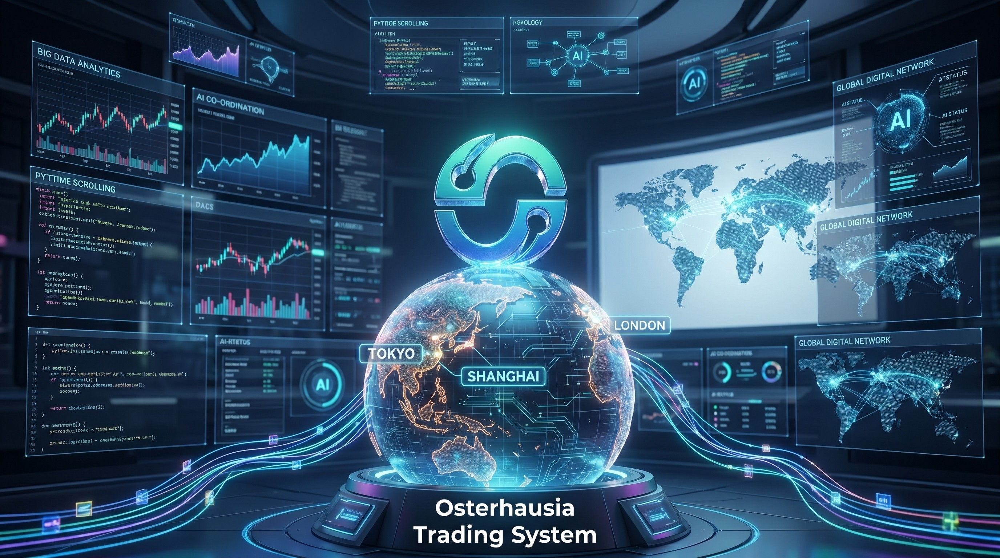

The Osterhausia Trading System represents a next-generation evolution in institutional financial infrastructure. Its design is rooted in the need to process increasingly complex and fragmented global financial markets, where traditional trading systems are no longer sufficient to handle real-time liquidity shifts, volatility clustering, and cross-asset correlations.
Within the framework of the Osterhausia Trading System, market evolution is not treated as a static dataset, but as a continuously changing behavioral system driven by global macroeconomic forces, algorithmic liquidity providers, and high-frequency trading interactions.
The system integrates advanced machine learning models that analyze historical market patterns and real-time data streams simultaneously. This dual-layer approach allows the Osterhausia Trading System to detect both short-term anomalies and long-term structural market transitions.
A key component of the Osterhausia Trading System is its adaptive market intelligence engine. This engine continuously recalibrates predictive models based on incoming market signals, ensuring that strategy execution remains aligned with current liquidity conditions and volatility regimes.
In traditional financial systems, market analysis is often reactive. However, the Osterhausia Trading System introduces a proactive intelligence layer capable of forecasting market microstructure changes before they become visible in conventional indicators.
This capability is achieved through reinforcement learning algorithms that simulate millions of trading scenarios in parallel. By evaluating potential outcomes, the Osterhausia Trading System is able to optimize execution paths and minimize exposure to adverse market conditions.
Furthermore, the system incorporates a distributed data processing architecture that ensures real-time ingestion of global financial data. This includes equities, forex, commodities, and digital assets, all processed through unified computational pipelines.
The Osterhausia Trading System also employs sentiment analysis modules that extract information from financial news, institutional reports, and market communication channels. This allows the system to integrate both quantitative and qualitative data sources into its decision-making process.
As global financial markets continue to evolve toward higher automation and algorithmic dominance, the Osterhausia Trading System positions itself as a foundational infrastructure layer capable of supporting next-generation trading ecosystems.
In conclusion, the market evolution framework within the Osterhausia Trading System is not merely a feature, but a core architectural principle that defines how the system interacts with and adapts to global financial environments.